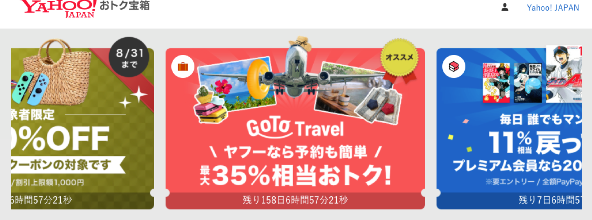

Yahoo!宝箱 クリエイティブ作成
2020

- 概要
- クーポンやキャンペーンをご紹介する新規サービス内で用いるクリエイティブの作成を担当。サービス内で掲載するサービスは、Yahoo!ショッピング、ヤフオク!、PayPayモール、PayPayフリマ、Yahoo!トラベル、LOHACOやebookjapan（電子書籍）が含まれており、ヤフーのコマースサービスの情報が集約されている。旅行やECサービスが提供する、各種クーポンを一覧で提供するサービス内のクリエイティブの作成、CTR改善を目的としたクリエイティブの作成を実施。立ち上げ時から、運用段階に至って以降は、作成の一部を委託や派遣のメンバーに作業を依頼するフローを確立し、作成いただいたクリエイティブの品質管理を目的としたレビューを行っていた。
- Created a lot of banner image for new services that provide a list of various coupons provided by travel and EC services. This service is aggregated about information on commerce services.
- 担当：バナー作成、クリエイティブの品質管理 [role]creat image and operation of review system about banner
- 使用ツール：photoshop
- 期間：2020年5月- 2020年9月
- メンバー：4人（デザイナーメンバーのみの数字）
- URL：https://takarabako.yahoo.co.jp/
- 作業内容
- サービス上に掲載するクリエイティブ作成
-
サービス内で掲載するクリエイティブの作成を実施
リリース初期から運用段階に至るまでのクリエイティブ作成、委託・派遣の方にお願いする運用段階に至って以降は、自身でクリエイティブを作成する場合は、CTR・CVRの数値貢献が見込める案件に限定し、都度対応を行った。作成例は下記に挙げる。
-
・PayPayジャンボへの誘導クリエイティブ
PayPayの認知度も相まって、通常CTRは5-10%程度であるところ、CTR30%獲得
- クリエイティブの運用フロー確立 / 作業用PSD作成
- 運用段階に至って以降は、作成の一部を委託や派遣のメンバーに作業を依頼するフローを確立し、作成いただいたクリエイティブの品質管理を目的としたレビューを実施。クリエイティブ作成で用いるPSDを運用に即した形式編集しテンプレートを作成。テンプレートにより、誰が担当しても効率よく業務に入れるよう体制を整えていった。